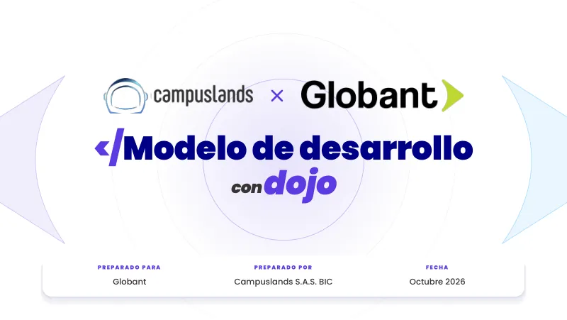
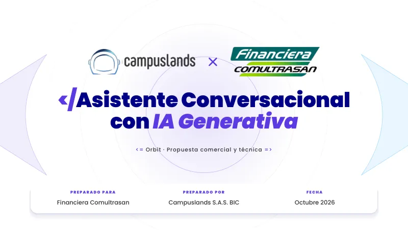
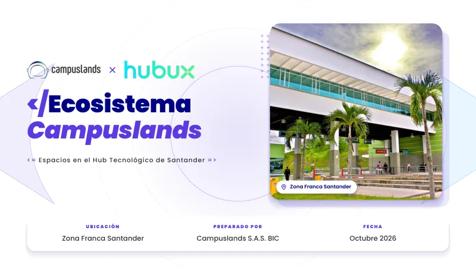
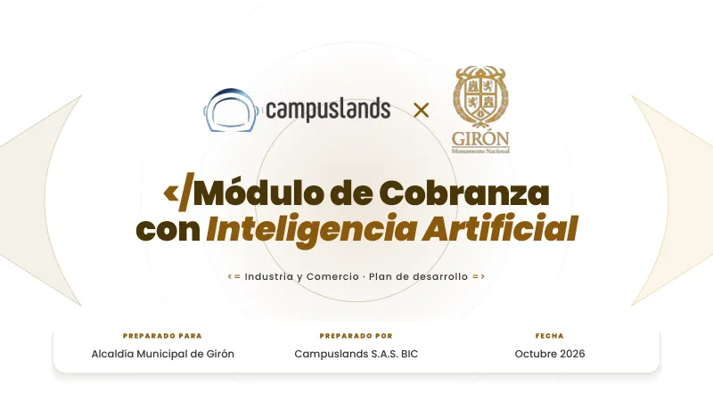
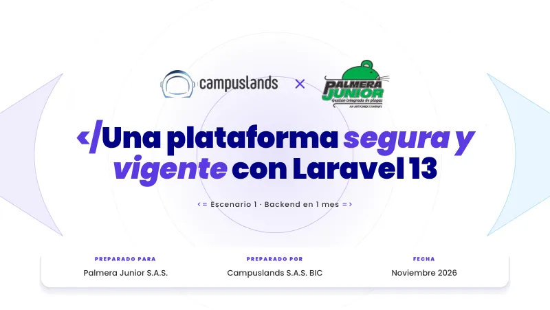
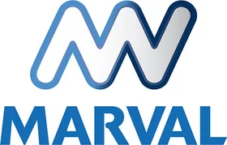

Guía de usuario · presentations-designer
presentations-designer: cómo crear la presentación de un cliente
Información de entrada, aprobación del plan, solicitud de ajustes y resultados: un PDF y un link web.
Descripción general
El Estudio de Presentaciones (presentations-designer) genera presentaciones comerciales para clientes con el diseño oficial de Campuslands. El usuario aporta los alcances y la información del cliente; el agente propone primero un plan lámina por lámina y construye el borrador solo después de que el plan se aprueba. El resultado es un PDF y un link web.
El agente se encarga del formato, la marca y la verificación. Al usuario le corresponde aportar la información correcta y aprobar el plan y el borrador.
El proceso sigue siempre el mismo orden: aprobación del plan, construcción del borrador y ajustes. Los cambios de fondo se resuelven en el plan, antes de que la presentación esté armada.
Cuándo se usa
El agente se usa para elaborar una presentación comercial para un cliente: una propuesta, una demostración de solución o una propuesta de plataforma. Está pensado para quien dirige la cuenta, que aporta los datos del cliente y las aprobaciones, mientras el agente realiza el trabajo de diseño.
Reglas de diseño
El diseño es el mismo para todos los clientes:
- Fondo blanco y tipografía Poppins.
- Los logos de Campuslands y del cliente juntos en la portada y el cierre, con el mismo peso visual y separados por una «×».
- Los colores de la presentación son siempre los de Campuslands. Del cliente se usa su logo y su contenido, no sus colores.
- Un máximo de 10 láminas.
Ejemplos de presentaciones
Portadas de las presentaciones generadas con el diseño vigente del agente, desde Globant Dojo (29 de septiembre de 2026). Todas comparten el mismo diseño; solo cambian el cliente, el proyecto y el contenido. La pila se puede arrastrar, recorrer con las flechas o abrir en abanico al pasar el cursor.





Logos de clientes
El logo de cada cliente se coloca en la portada y el cierre de su presentación. Se muestran con sus colores originales; el carrusel se recorre con las flechas, arrastrando o pasando el cursor.

Entradas requeridas
Si falta información, el agente te enviará un cuestionario. Puedes adelantarte reuniendo estas seis cosas:
| Bloque | Qué incluir | Ejemplo |
|---|---|---|
| Datos generales | Nombre completo del cliente (con S.A.S. o S.A.), nombre del proyecto, cargo y área de quien recibe la propuesta, y quién lidera la cuenta | Unidrogas S.A.S. · Plataforma de Inteligencia Financiera · CFO |
| Línea base y dolores | Cifras actuales del problema, los problemas cualitativos y cómo se resume el «hoy» frente al «con la plataforma» | 4 horas manuales por reporte; información en silos |
| Arquitectura y alcance | Qué fuentes de datos se conectan, de 4 a 6 módulos clave y un ejemplo de cómo se usa | SAP, bases SQL; pregunta en lenguaje natural y respuesta de la IA |
| ROI y sector | Ahorro o retorno proyectado y casos de éxito del mismo sector | 25 % de ahorro; casos en el sector financiero |
| Condiciones comerciales | Costo total en COP, plazo en meses, esquema de pago, garantía y soporte | 40 % anticipo, 40 % hito intermedio, 20 % entrega |
| Logo del cliente | PNG o SVG con fondo transparente | logo-cliente.png |
El título de la página web lleva la razón social completa del cliente, con su sufijo legal. Si no se la das, el agente te la pedirá; no la adivina.
Sobre el precio
Si tu fuente es un Excel de cotización, el agente toma el total de inversión de la celda Y122 del Excel (el precio con el margen comercial completo), no del PDF de alcance, que puede mostrar otra cifra. Si encuentra una diferencia entre ambos, te consultará antes de construir. El desglose por módulo es material interno: en la presentación el total aparece como una cifra única, salvo que pidas lo contrario.
Paso a paso
1. Comparte lo que tienes
Pega o adjunta los alcances, notas de reunión o cotización. Cuanto más completo sea, menos preguntas recibirás.
2. Aprueba el plan
Antes de diseñar, el agente te muestra una propuesta lámina por lámina: qué dirá cada una, qué tipo de diseño usará y por qué cada bloque está donde está. No empieza a construir hasta que lo confirmes. Este es el mejor momento para cambiar el orden, quitar o fusionar láminas.
3. Revisa el borrador
El agente entrega la presentación completa, revisada con una herramienta automática y a la vista. La revisión del contenido corresponde al usuario, que conoce al cliente.
4. Pide ajustes
Dile qué cambiar. Después de cada ajuste el agente vuelve a verificar la presentación completa, porque un cambio pequeño puede mover el resto.
5. Recibe el PDF y el link
Cuando das tu visto bueno, el agente exporta el PDF, registra la presentación en el portal de proyectos, la publica y te comparte el link. Si no pudo confirmar que la publicación ya está activa, te lo dice.
La web tarda aproximadamente 2 minutos en mostrar la presentación nueva o los cambios. El agente lo recuerda cada vez que publica. Si el link da error justo después, espera y recarga; está explicado en Cómo funciona la web de presentaciones.
Cómo es el plan por lámina
El plan es una lista corta. Este es un ejemplo ilustrativo de cómo se ve, con datos inventados:
| Lámina | Qué responde | Contenido | Por qué está así |
|---|---|---|---|
| 1 · Portada | ¿De quién y para quién? | Logos de ambas empresas, título y fecha | Es lo primero que ve el cliente |
| 2 · Contexto | ¿Qué le duele? | El problema en una frase y un dato clave | El dato va destacado para que se lea primero |
| 3 · Cifras | ¿Qué tan grande es? | Cuatro números de la línea base | Cuatro es el máximo que se lee de un vistazo |
| 4 · Solución | ¿Qué proponemos? | Los módulos principales | Una cuadrícula agrupa lo que va junto |
| 5 · Inversión | ¿Cuánto y cómo? | Total, esquema de pago y garantía | Una sola cifra, sin desglose por módulo |
| 6 · Cierre | ¿Qué sigue? | Próximos pasos y logos | Cierra con la acción que se le pide al cliente |
Si el contenido no cabe en 10 láminas, el agente fusiona (por ejemplo, contexto con reto, o inversión con condiciones de pago). Solo pasa de 10 si tú lo pides con esas palabras.
Ejemplos de conversación
Empezar
 Claude Codepresentations-designerClaude Code
Claude Codepresentations-designerClaude CodeAprobar el plan
Claude Codepresentations-designerClaude CodeCambiar el orden o el contenido
Claude Codepresentations-designerClaude CodePedir un rediseño
Si una lámina se ve «plana», no la retoca: la rediseña con otra estructura.
Claude Codepresentations-designerClaude CodeResultados
Siempre recibes los dos. Ninguno reemplaza al otro: el PDF es el archivo que no cambia; el link es la versión interactiva.
Cómo revisar el borrador
Tómate unos minutos para recorrer cada lámina con estas preguntas:
- ¿El nombre del cliente está bien escrito? Razón social completa, con el sufijo legal.
- ¿Cada cifra tiene respaldo? Si ves un número que no reconoces, pregunta de dónde sale.
- ¿La historia se entiende? Del problema a la solución y al siguiente paso.
- ¿Los dos logos se ven del mismo tamaño? Si uno domina, pídelo y se ajusta.
- ¿El total de inversión es el correcto? Compáralo con tu cotización.
- ¿Hay demasiado texto en alguna lámina? Pide que la divida o la simplifique.
- ¿Algo suena a promesa que no podemos cumplir? Pídele que lo reformule.
Cómo pedir ajustes
Cuanto más concreto seas, mejor. Algunos ejemplos de lo que puedes escribir:
| Quieres… | Puedes decir… |
|---|---|
| Cambiar un texto | «En la lámina 3, cambia “reducción de costos” por “ahorro operativo”» |
| Reordenar | «Pasa la lámina de inversión al final, antes del cierre» |
| Quitar o fusionar | «Une contexto y reto en una sola lámina» |
| Cambiar un número | «El plazo es 5 meses, no 4. Actualiza todas las láminas donde aparezca» |
| Ajustar los logos | «El logo del cliente se ve más grande que el nuestro» |
| Pedir otro diseño | «La lámina 6 se ve plana; hazla con otra estructura» |
| Pasar de 10 láminas | «Necesito 12 láminas en total» (dilo textualmente) |
Cómo funciona la web de presentaciones
Las presentaciones no viven en el mismo repositorio que el agente: están en uno aparte, llamado Presentaciones. Cuando el agente termina una, la sube ahí y la web se actualiza sola. Por eso hay tres cosas que debes saber.
1. Se instala en dos pasos, y el segundo va en una carpeta exacta
Además de clonar el repositorio de los agentes, hay que clonar Presentaciones dentro de la carpeta del agente, con el nombre presentaciones. Si queda en otro lugar, el agente no encuentra su plantilla ni puede publicar. El paso a paso, con un mensaje listo para dárselo a tu IA, está en Inicio.
Ruta dentro del repositorio 1agents/claude-agents/presentations-designer
Paso 1 · clonar el repositorio 1
Las instrucciones, la wiki y las herramientas del agente, junto con los demás agentes.
Así queda la carpeta
La carpeta presentaciones/ llega vacía: Git no trae el contenido del repositorio 2.
Paso 2 · clonar el repositorio 2 dentro de esa carpeta
Las presentaciones ya hechas y el portal web. Es lo que publica Vercel.
Así queda la carpeta
Su contenido queda dentro de presentaciones/, con ese nombre exacto.
git clone https://github.com/GustavoAdolfoNavarroPacheco/Presentaciones presentaciones2. Pide permiso a Gustavo antes de empezar
Presentaciones es un repositorio privado. Sin permiso no se puede ni clonar ni publicar. Escríbele a Gustavo Navarro con tu usuario de GitHub y acepta la invitación que te llegará; el inicio de sesión lo haces tú en el navegador. Nunca le des tu contraseña ni tus claves a la IA. Si el agente recibe un error de permisos, se detiene y te lo explica: no intenta rodeos.
3. La publicación tarda unos 2 minutos
Cuando el agente sube la presentación, un servicio llamado Vercel la construye y la pone en línea. Ese proceso tarda aproximadamente 2 minutos.
- 1El agente sube la presentaciónLos archivos llegan a GitHub.
- 2Vercel lo detectaEmpieza a construir la web.
- 3Construye la webCompila el portal y copia las presentaciones.
- 4En líneaEl link ya muestra la versión nueva.
Mientras tanto, el link puede dar 404 o mostrar la versión anterior. No significa que algo falló: espera dos minutos y recarga con Ctrl + F5. Si pasan más de cinco, avísale al agente o a Gustavo.
Qué se ve en cada dirección
Todo se publica en https://fullservicepresentations.vercel.app, con dos zonas de acceso distinto:
| Dirección | Quién entra | Qué muestra |
|---|---|---|
/ | Solo usuarios con cuenta (correo y contraseña) | El catálogo de proyectos: buscador, filtros y vista en cuadrícula o lista |
/<nombre> | Cualquiera con el link | Una presentación (por ejemplo /fcv), lista para enviar al cliente |
/<nombre>/<nombre>.pdf | Cualquiera con el link | El PDF de esa presentación |
- Compartir con el cliente es seguro: el cliente abre solo el link de su presentación; no ve el catálogo ni los proyectos de otros clientes.
- Una presentación publicada puede no estar en el catálogo. Para aparecer allí, el agente la registra; sin ese registro funciona por su link, pero no sale en el buscador.
- El nombre es la dirección. Si cambia, cambia el link que ya enviaste.
El portal de proyectos
Las presentaciones se registran en un portal web de Full Service, donde puedes encontrar los proyectos de todos los clientes. Para entrar, necesitas una cuenta; si todavía no tienes, un administrador debe darte acceso.
Qué puedes hacer en el portal
- Buscar y filtrar proyectos por categoría, cliente o fecha, y verlos en cuadrícula o en lista.
- Abrir la ficha de un proyecto, con botones para abrir la presentación, ver el PDF, copiar el enlace y abrir la cotización (si tiene una).
- Cotizar desde la ficha, con el cotizador integrado.
Permisos
| Rol | Puede |
|---|---|
| Propietario | Todo |
| Administrador | Gestionar proyectos y usuarios |
| Usuario | Crear y editar proyectos, y cotizar |
| Visitante | Solo ver: catálogo, fichas, enlaces, PDF y cotizaciones |
En los proyectos que crea el agente, la fecha, el link de la presentación y el PDF aparecen con un candado y no se pueden editar desde el portal. Si algo de eso necesita corregirse, pídeselo al agente.
Comandos rápidos con «!»
Además de pedirle las cosas con tus palabras, puedes darle una orden corta escribiendo ! antes de la palabra, por ejemplo !optimize. Cuando el agente reconoce un comando, lo cumple siempre, y lo primero que escribe en su respuesta es qué comandos recibió.
- Puedes escribirlo solo o con un texto:
!optimize la presentación en curso. - Puedes combinar varios:
!plan !no-assumptions. - Vale para la tarea en curso; en una tarea nueva se escribe de nuevo.
!helpmuestra la lista de comandos de este agente.
!optimize mejora lo que se esté haciendo sin cambiar su alcance ni sus datos. !notime acelera el trabajo: menos preguntas sueltas y menos explicaciones, pero nunca se salta una verificación obligatoria.
Un comando no permite saltarse las reglas del agente (no inventar datos, la marca, la confidencialidad, las aprobaciones y verificaciones obligatorias). Si pides algo que una regla impide, el agente hace todo lo permitido y te dice en una frase qué no pudo y por qué.
Estos son los comandos de este agente:
General
| Comando | Qué hace aquí |
|---|---|
!analyze | Analiza la solicitud, el problema, los documentos o la situación antes de actuar: qué se pide, qué hay, qué falta y qué riesgos ve. Entrega hallazgos; no ejecuta ni modifica nada. Aquí: Analiza los alcances y datos del cliente: qué mensaje, qué cifras, qué falta; no diseña todavía. |
!research | Investiga a fondo el tema, cruza fuentes y entrega lo relevante con cada dato citado a su fuente. Sin fuente verificable no es un dato: se marca [PENDIENTE]. |
!plan | Entrega un plan de trabajo estructurado (pasos, orden, insumos, entregables, supuestos y puntos de decisión) y se detiene a esperar aprobación antes de ejecutarlo. Aquí: Es el plan lámina por lámina (máx. 10): pregunta que responde cada una, contenido y diseño. Espera aprobación antes de construir. |
!execute | Ejecuta ya lo solicitado o el siguiente paso aprobado del flujo, sin volver a proponer ni a preguntar lo ya decidido. No se salta las puertas de aprobación ni de verificación. Aquí: Construye el borrador del plan ya aprobado. Sin plan aprobado no construye: lo pide. |
!review | Revisa el trabajo indicado y entrega oportunidades de mejora priorizadas (qué cambiaría y por qué). No lo modifica salvo que se le pida. |
!audit | Auditoría integral de punta a punta: contradicciones entre documentos, cifras que no cuadran, reglas incumplidas y datos sin fuente. Entrega hallazgos con evidencia y severidad. Aquí: Auditoría de la presentación completa: marca, cifras, logos, láminas fuera de las reglas, coherencia entre láminas. |
!validate | Comprueba, requisito por requisito, que el resultado cumple lo establecido (reglas duras, insumos, formato). Veredicto «cumple / no cumple» por ítem, con evidencia. Aquí: Corre verificar_deck.py y la revisión a la vista de cada lámina contra las reglas supremas del Brandbook. |
!optimize | Optimiza lo que se esté desarrollando o ya existe (proceso, solución o resultado): mejora claridad, calidad, consistencia, peso o rendimiento sin cambiar su alcance ni sus datos. Aquí: Pule la presentación en curso (ritmo, texto, jerarquía, peso) sin cambiar el plan aprobado ni las reglas de marca. |
!compare | Compara alternativas con criterios explícitos y recomienda la más conveniente, con el porqué. |
!summarize | Resumen claro y estructurado (lo esencial, decisiones y pendientes) del trabajo, de un documento o de la conversación. |
!document | Documenta lo hecho: actualiza la wiki y la bitácora del agente, o genera la documentación técnica, funcional o ejecutiva que se pida. |
!prioritize | Clasifica actividades, hallazgos o elementos por impacto, importancia y urgencia, y entrega el orden recomendado. |
!help | Lista los comandos disponibles en este agente, agrupados, con su función. |
Modos
| Comando | Qué hace aquí |
|---|---|
!notime | Modo prisa: apresura el desarrollo optimizándolo: agrupa preguntas en un solo mensaje, paraleliza, reutiliza lo ya validado, omite explicaciones y pasos opcionales y responde solo con lo esencial. Nunca se salta verificaciones obligatorias, puertas de aprobación ni la veracidad: acelera el camino, no recorta la calidad. Aquí: Agrupa preguntas, construye por bloques y reduce explicaciones. No se salta el plan aprobado ni la verificación automática y a la vista. |
!think-deep | Análisis más profundo antes de responder: considera alternativas, casos límite y consecuencias, y muestra solo el razonamiento que importa. |
!critical-mode | Modo crítico: cuestiona decisiones, supuestos y su propio trabajo; busca errores y contradicciones antes de entregar y los dice. |
!no-assumptions | No supone: ante un dato faltante o ambiguo pregunta (todas las dudas juntas) en lugar de rellenar o inferir. |
!double-check | Segunda verificación independiente de su propio resultado (releer la fuente, recalcular, comparar) y corrección de lo que encuentre; reporta qué verificó. |
!strict-mode | Sigue al pie de la letra los requisitos e instrucciones dados: sin iniciativas, adiciones ni interpretaciones creativas. |
Técnico y seguridad
| Comando | Qué hace aquí |
|---|---|
!debug | Identifica la causa de un error de software (script, conversión, verificación) y lo corrige; vuelve a correr la verificación para comprobarlo. Aquí: Corrige el fallo encontrado en scripts, plantilla o visor y repite la verificación. |
!troubleshoot | Investiga un problema técnico y determina su causa raíz, con evidencia. Diagnostica; no cambia nada. Aquí: Averigua por qué falla una verificación, la exportación a PDF o la publicación. |
!security-check | Revisa seguridad y confidencialidad: datos de otros clientes mezclados, credenciales, datos personales, información que no debe salir del proyecto. Aquí: Revisa que no se mezclen datos de otros clientes, que el portal limite el acceso y que las presentaciones confidenciales no queden públicas. |
!implement | Desarrolla la funcionalidad o solución solicitada (código, plantilla, script). Aquí: Desarrolla la herramienta, plantilla o mejora del portal pedida, verificada con las herramientas del repositorio. |
!refactor | Mejora la estructura del código sin alterar su comportamiento esperado; lo demuestra con la verificación antes y después. Aquí: Reordena código del visor, scripts o plantilla sin cambiar lo que producen; lo demuestra con verificar_deck.py. |
!code-review | Evalúa calidad, organización y mantenibilidad del código; entrega observaciones priorizadas. Aquí: Revisa el código de la plantilla, el visor, los scripts y el portal (presentaciones/web). |
!performance | Analiza y optimiza el rendimiento: tiempos de carga, peso de archivos, fluidez. Aquí: Mide y reduce el peso y el tiempo de carga de la presentación (imágenes, fuentes, scripts) y del portal. |
!deploy-check | Verifica que el proyecto esté listo para publicarse: requisitos, exportación y enlaces comprobados. Aquí: Comprueba antes de publicar: requisitos de <head>, visor interactivo, PDF exportado, registro en el portal y enlace que abre. |
!rollback | Gestiona la reversión controlada de cambios a un estado anterior conocido, sin perder lo nuevo (queda respaldado). Aquí: Vuelve la presentación a una versión anterior con git, conservando la nueva en una rama o copia. |
UX/UI y diseño
| Comando | Qué hace aquí |
|---|---|
!ui-review | Audita visualmente una interfaz y detecta problemas de diseño. Aquí: Revisa a la vista láminas y visor: jerarquía, alineación, espaciado, legibilidad. |
!ux-review | Evalúa la experiencia de usuario y los flujos de navegación. Aquí: Evalúa el recorrido de quien ve la presentación: navegación del visor, ritmo, claridad del mensaje. |
!redesign | Propone y desarrolla un rediseño visual, dentro de las reglas de marca. Aquí: Rediseña una lámina o sección dentro del Brandbook v3 (fondo blanco, Poppins, colores Campuslands); nunca cambia las reglas de marca. |
!design-system | Construye, documenta o estandariza el sistema de diseño. Aquí: Documenta o ajusta el sistema de diseño v3 en wiki/sistema-diseno.md y la plantilla base. |
!visual-audit | Examina proporciones, distribución, tipografía y consistencia visual del entregable, a la vista y página por página. Aquí: Examina cada lámina a la vista: proporciones, distribución, tipografía, logos (mismo peso visual) y consistencia. |
!responsive-check | Evalúa cómo se adapta la interfaz a distintos tamaños y dispositivos. Aquí: Comprueba el visor y el portal en distintos anchos de pantalla. |
!accessibility | Evalúa y mejora la accesibilidad: contraste, tamaños, teclado, textos alternativos. Aquí: Revisa contraste, tamaños de texto, navegación por teclado y textos alternativos del visor y las láminas. |
!microinteractions | Diseña o implementa microinteracciones y animaciones sutiles, sin romper las reglas de marca. Aquí: Propone o implementa transiciones y animaciones del visor que respeten las reglas de marca y no distraigan. |
!consistency-check | Detecta inconsistencias entre secciones, componentes, cifras, nombres y estilos del mismo entregable. Aquí: Revisa que nombres, cifras, logos y estilos sean idénticos en todas las láminas y en el PDF. |
!componentize | Identifica elementos repetidos y los convierte en componentes reutilizables. Aquí: Convierte bloques repetidos de láminas en componentes de la plantilla base reutilizables. |
Gestión de proyecto
| Comando | Qué hace aquí |
|---|---|
!breakdown | Divide un proyecto o solicitud compleja en actividades específicas, cada una con su entregable y su orden. |
!track-progress | Informa el progreso y los pendientes (hecho, en curso, bloqueado, [PENDIENTE]) a partir de la bitácora y del trabajo actual. |
!requirements | Extrae y estructura requerimientos funcionales y no funcionales de las fuentes, cada uno con su referencia de origen. Aquí: Extrae de los alcances los datos que la presentación necesita (6 bloques) y señala lo que falta. |
!generate-report | Genera un informe ejecutivo (decisiones, resultado, pendientes) o técnico (método, evidencias, verificaciones) del trabajo. |
!final-delivery | Prepara y valida la entrega final: corre todas las verificaciones obligatorias, completa el checklist de cierre (wiki y bitácora) y entrega solo si todo pasa. Aquí: Verificación completa, PDF, registro en el portal y publicación con link; solo entrega si la publicación está confirmada. |
!agent-handoff | Prepara el traspaso al siguiente agente del flujo comercial: resumen, entregables con su ruta, decisiones tomadas y pendientes. Aquí: Prepara el traspaso a Desarrollador de Cotizaciones (quote-developer) con la presentación aprobada, sus datos y decisiones. |
IA avanzada
| Comando | Qué hace aquí |
|---|---|
!second-opinion | Un subagente independiente evalúa el resultado sin ver tu razonamiento; se contrasta con el tuyo y se explican las diferencias. |
!cross-review | Otro especialista (subagente con otro rol) revisa el resultado y devuelve observaciones; se aplican las válidas y se informa de las descartadas. |
Multiagente
| Comando | Qué hace aquí |
|---|---|
!orchestrate | Reparte partes independientes del trabajo entre varios subagentes en paralelo y las integra en un solo resultado verificado. Aquí: Reparte láminas o verificaciones independientes entre subagentes; la integración y la verificación final las hace el agente principal. |
!team-review | Varios revisores con roles distintos evalúan por separado el mismo resultado y se consolida su evaluación. Aquí: Revisores con rol de diseño/marca, contenido y veracidad y técnico (HTML/visor), cada uno por separado. |
!consensus | Consolida las evaluaciones disponibles (de subagentes o de revisiones previas) en una sola recomendación, con las discrepancias a la vista. |
Preguntas frecuentes
¿Puedo usar los colores de mi cliente? No. Los colores son siempre los de Campuslands. Del cliente se usa su logo y su contenido.
¿Y si necesito más de 10 láminas? Pídelo con esas palabras. Antes de aceptar, el agente intentará fusionar contenido.
¿Por qué me pide el logo transparente? Porque sobre fondo blanco un logo con su propio fondo se vería como un cuadro pegado. Si el logo es claro o blanco, te pedirá la versión a color u oscura.
¿Por qué no se muestra el precio de cada módulo? Porque el desglose es material interno. El total aparece como una sola cifra. Si necesitas mostrar el desglose, pídelo expresamente.
¿Cuánto tarda? Depende de la información. Con los datos completos, el plan llega rápido; el borrador se entrega ya verificado.
El link no abre. Si acabas de publicar, espera unos 2 minutos y recarga con Ctrl + F5: la web tarda en construirse. Si pasan más de cinco, avísale al agente: él confirma si la publicación ya está activa. Mientras tanto puedes enviar el PDF.
El agente me dice que no tiene permiso para publicar. Falta el acceso al repositorio Presentaciones. Pídeselo a Gustavo Navarro con tu usuario de GitHub; el agente se detiene hasta que lo tengas.
¿Puedo editar el PDF? El PDF no se edita. Si necesitas un cambio, pídeselo al agente y se genera de nuevo.
Glosario
| Término | Qué significa |
|---|---|
| Deck | Una presentación completa |
| Lámina | Cada página de la presentación |
| Co-branding | Mostrar juntos los logos de Campuslands y del cliente |
| ROI | Retorno de inversión: cuánto se gana o se ahorra frente a lo que se invierte |
| Slug | El nombre corto que forma la dirección web de la presentación |
| Razón social | El nombre legal completo de la empresa |
| Portal | La página web donde se registran todos los proyectos |
Solución de problemas
Si el agente no responde como esperas, repite tu pedido con más contexto. Si algo del diseño te parece incorrecto, descríbelo con una frase concreta («en la lámina 5 el texto se sale de la tarjeta»). Si el problema persiste, avisa a quien mantiene el agente; su guía técnica incluye una tabla de problemas frecuentes.